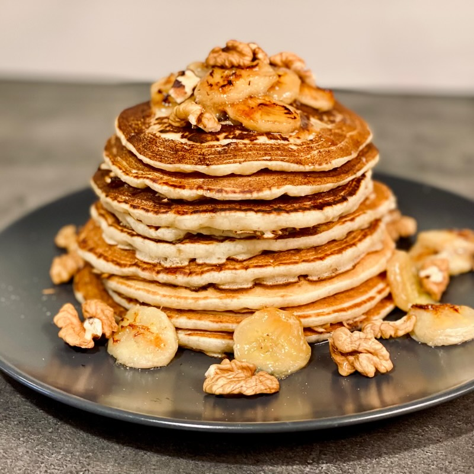

Fluffy Banana Pancakes
These fluffy banana pancakes are light, naturally sweet, and perfect for breakfast or brunch. The ripe bananas give them a delicious flavor and extra moisture, so every bite feels warm and comforting. Best enjoyed fresh off the pan with a drizzle of honey or maple syrup!
Recipe Information:
- Prep time: 10 minutes
- Cook time: 15 minutes
- Servings: 8 pancakes
- Difficulty: Beginner
Ingredients:
- 1 cup all-purpose flour
- 2 ripe bananas, mashed
- 1 tablespoon sugar
- 1 teaspoon baking powder
- 1/2 teaspoon baking soda
- 1/4 teaspoon salt
- 1 cup buttermilk
- 1 large egg
- 2 tablespoons melted butter
- 1 teaspoon vanilla extract
Instructions:
- In a large bowl, whisk together the flour, sugar, baking powder, baking soda, and salt.
- In another bowl, mix the mashed bananas, buttermilk, egg, melted butter, and vanilla extract until well combined.
- Pour the wet ingredients into the dry ingredients and stir gently until just combined. Do not overmix; a few lumps are okay.
- Heat a non-stick skillet or griddle over medium heat. Lightly grease with butter or oil.
- Pour 1/4 cup of batter onto the skillet for each pancake. Cook until bubbles form on the surface and the edges look set, about 2-3 minutes.
- Flip and cook for another 2-3 minutes until golden brown. Repeat with remaining batter.
- Serve warm with honey or maple syrup.
Fluffy Bananna Pancake: Image of finished dish
Tips:
- Use overripe bananas for the best flavor.
- Do not overmix the batter to keep pancakes fluffy.
- Adjust cooking time based on your stove's heat level.
- Serve immediately for the best texture.
Nutrition Facts:
- Calories: 180 per pancake
- Protein: 4g
- Carbohydrates: 30g
- Fat: 5g
- Sugar: 6g